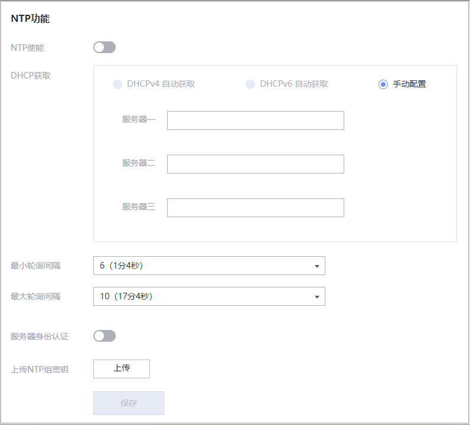

操作步骤
- 选择“iBMC管理 > 时区&NTP”。图1 时区&NTP
表1 时区&NTP 参数
描述
时区
iBMC系统的时区。
时区信息由“地区”和“时区”组成。
默认值：“其他”+“UTC”
说明：- 当选择“DHCPv4自动获取”NTP信息时，不需要设置时区信息。
- 在支持夏令时的时区，iBMC时间会在每年开始夏令时时自动调快1小时，结束夏令时时自动调慢1小时。
- 在操作系统中执行时间同步时，为了保证操作系统时间与iBMC时间一致，请执行命令hwclock --utc -w。
NTP使能
使能或禁止iBMC的NTP功能。使能NTP服务后，iBMC系统时间可从NTP服务器同步。
DHCPv4自动获取
无需手动操作，iBMC系统自动获取基于IPv4的NTP信息。
须知：iBMC管理网口的IP地址获取模式为自动获取时，NTP信息获取方式也必须选择自动获取。
DHCPv6自动获取
无需手动操作，iBMC系统自动获取基于IPv6的NTP信息。
须知：iBMC管理网口的IP地址获取模式为自动获取时，NTP信息获取方式也必须选择自动获取。
手动配置
选择手动设置NTP信息后，用户可以手动配置首选NTP服务器地址和备用NTP服务器地址。
须知：iBMC管理网口的IP地址获取模式为手动配置时，NTP信息获取方式也必须选择手动配置。
服务器一～三
优先选择的NTP服务器的地址。
取值范围：IPv4地址、IPv6地址和域名
说明：域名的取值原则：
- 最大长度为67个字符。
- 可由数字、大小写英文字母和连接号（-），点号（.）组成。
- 连接号不能作为域名的开头或结尾，点号不能作为域名的开头。
- 任意两个点号之间的字符长度不允许超过63。
提供两种选择方案。具体方案请以实际界面为准。
- 方案一：提供三个NTP服务器。实际使用时，三个服务器地址同时生效。
- 方案二：提供三组NTP服务器，每组服务器中，左侧为首选服务器，右侧为备选服务器。实际使用时，按照以下优先级规则选择服务器地址：
- 分别从每组中选择一个服务器地址。
- 当某组两个服务器地址均无效时，放弃选择该组服务器地址。
- 当某组只有一个服务器地址有效时，选择有效服务器地址。
- 当某组两个服务器地址均有效时，优先选择IPv6地址。如果均为IPv4或IPv6地址，则优先选择首选服务器地址。
说明：NTP主备服务器的切换与iBMC和NTP服务器之间的同步时间间隔（最小轮询间隔 ≤ 同步时间间隔 ≤ 最大轮询间隔）有关，当iBMC多次与主用服务器同步无响应时，NTP服务器将切换为备用服务器。
最小轮询间隔
iBMC系统从NTP服务器进行时间同步的最小周期，即NTP报文的最小轮询间隔时间。
如最小轮询间隔为6，表示间隔时间为2的6次方秒，即1分4秒。
取值范围：3～17
说明：iBMC V585及以上版本支持自定义此参数。
最大轮询间隔
iBMC系统从NTP服务器进行时间同步的最大周期，即NTP报文的最大轮询间隔时间。
如最大轮询间隔为6，表示间隔时间为2的6次方秒，即1分4秒。
取值范围：3～17
说明：iBMC V585及以上版本支持自定义此参数。
服务器身份认证
iBMC系统与NTP服务器通信时，是否需要进行身份认证。
默认值：关闭
上传NTP组密钥
当开启服务器身份认证时，需要上传密钥到iBMC，用于与NTP服务器通信时的身份认证。
说明：- 您可以自行下载密钥生成器（例如ntp-keygen）生成所需密钥。
- 仅支持上传MD5和SHA256算法生成的秘钥文件。
- 请定期更新秘钥，否则可能存在安全风险。
- 在“地区”和“时区”下拉列表中，选择要设置的参数。
- 单击“保存”。
显示“操作成功”表示设置成功。

在操作系统中执行时间同步时，为了保证操作系统时间与iBMC时间一致，请执行命令hwclock --utc -w。
- 在“NTP功能”区域框中，根据表1 时区&NTP提供的参数信息，设置NTP信息。
- 单击“保存”。
显示“操作成功”表示设置成功。